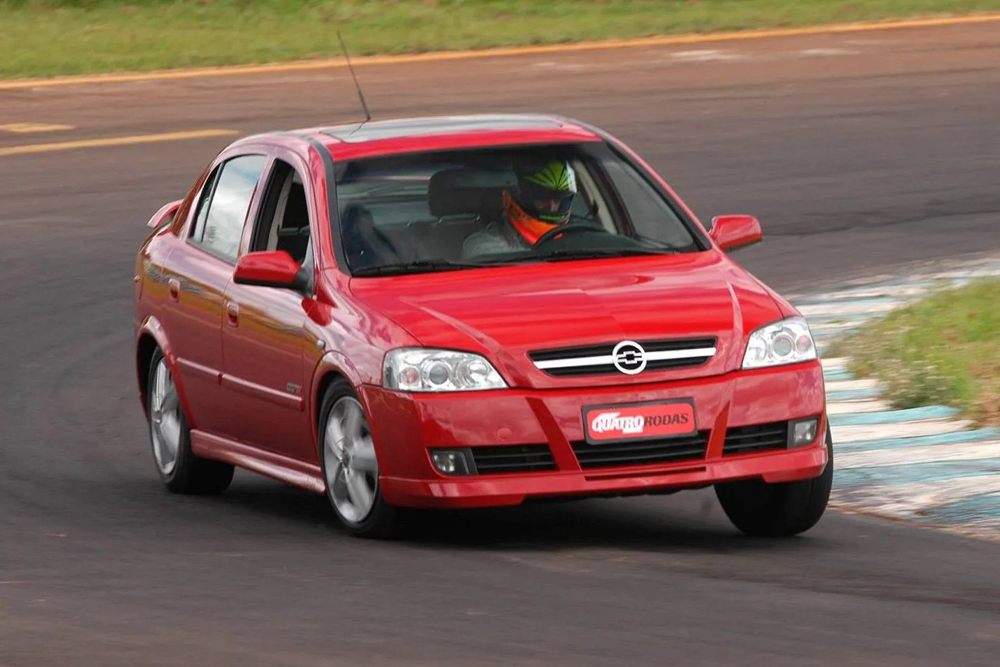

Chevrolet Astra GSi 2.0 16V
O Astra esportivo que trouxe a famosa sigla GSi de volta ao Brasil. Modelo 2005.

Ficha Rápida
Motor
2.0 16V
Potência
136 cv
Torque
19,2 kgfm
Câmbio
Manual de 5 marchas
Tração
Dianteira
0 a 100 km/h
9,1 s
Velocidade máxima
203 km/h
Motor a gasolina de 1.998 cc e 4 cilindros em linha. A potência é a 5.400 rpm e o torque a 4.000 rpm. Os números de desempenho variam conforme a fonte: outra ficha técnica traz 10,1 s e 200 km/h.
História
A marca
A Chevrolet foi fundada em 1911 pelo piloto Louis Chevrolet e por William Durant, fundador da General Motors. No Brasil, a GM chegou em 1925. Nos anos 2000, a Chevrolet daqui vendia carros projetados pela Opel, marca alemã da GM.
Como surgiu
O Astra é um projeto alemão da Opel. Chegou ao Brasil importado da Bélgica e, no fim dos anos 1990, passou a ser fabricado em São Caetano do Sul (SP).
Por que foi criado
A GSi nasceu em 2003 para atender pedidos do mercado e da imprensa por um Astra esportivo, que lembrasse o Kadett GSi, muito desejado nos anos 1980 e 1990.
2003
O Astra foi reestilizado, com frente mais limpa, e ganhou a versão hatch de 5 portas e a GSi, com motor 2.0 de 136 cv.
2005
A GSi saiu de linha e deu lugar à versão SS, com motor 2.0 8V de 127 cv.
5 Curiosidades
1. Logotipo da Opel
Os Astra equipados com airbag vinham com o logotipo da Opel no volante.
2. Só a gasolina
Enquanto outros Astra ganharam motor flex, a GSi nunca deixou de ser só a gasolina.
3. Campeão de pista
O Astra correu na Stock Car, e Giuliano Losacco foi campeão em 2004 e 2005 com ele.
4. Mais forte na Argentina
Lá a GSi durou mais, até cerca de 2009, com motor 2.4 16V de 150 cv.
5. O Astra virou Vectra
O Vectra brasileiro de 2005 era, na verdade, a nova geração do Opel Astra.
O Que Torna o Carro Especial?
Motor 2.0 16V
Quatro válvulas por cilindro e duplo comando, rendendo 136 cv.
Visual esportivo
Rodas aro 16 com pneus 205/55 R16 e a sigla GSi.
Aerodinâmica
Coeficiente aerodinâmico de 0,30 Cx.
Herança da Opel
Foi uma das últimas lembranças da Opel antes de a Chevrolet se afastar da marca alemã.
Galeria


Fontes
- Carros na Web - Ficha técnica Chevrolet Astra GSi 2.0 16V 2005
- iCarros - Ficha técnica Chevrolet Astra Hatch GSi 2.0 16V 2005
- Amantes de Carros - Ficha técnica Chevrolet Astra GSi 2.0 16V 136cv
- Heycar - Ficha técnica completa do Chevrolet Astra GSI 2.0 16V 2005
- Autopapo - Chevrolet 110 anos: veja 10 modelos marcantes no Brasil
- Blog da Jocar - Astra, o europeu que não deveria ter ido embora
- Autorealidade - História dos Automóveis: Chevrolet Astra
- Carzin - Clássico: Chevrolet Astra
- Álvaro Matias - Astra GSI: motor, estilo, equipamentos, desempenho e detalhes
- Notícias Automotivas - Astra GSi 2.4 16V (Um esportivo argentino que anda muito!)
- Wikipedia - Giuliano Losacco